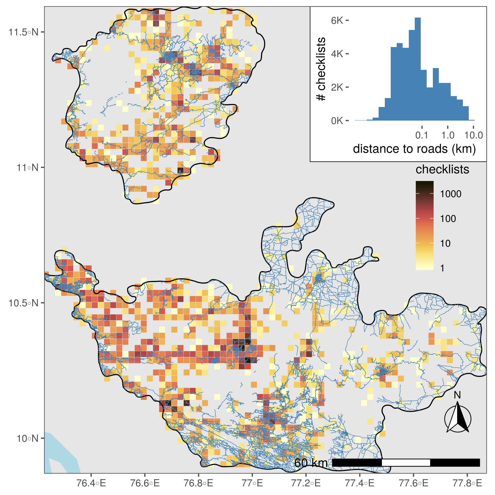

Tropical mountains host vast biodiversity, are under massive human pressure, but remain understudied. Along with Vijay Ramesh at Columbia University, Morgan Tingley at UCLA, and VV Robin at IISER Tirupati, I looked at how climatic drivers (temperature and rainfall) and land cover types (forests, grassland, tea gardens etc.) influence the occupancy of 93 bird species in the Nligiri and Anamalai hill ranges in southern India.

eBird checklists in the southern Western Ghats. Most checklists are near roads, and near each other. Some regions are over-represented, and breaking spatial- and temporal-autocorrelation was a significant part of this project.